Activity: Using Design Intent in sheet metal
Click here to download the activity file.
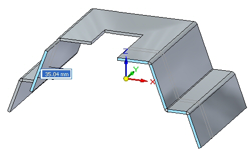
Objectives
This activity demonstrates how to control behavior when modifying sheet metal parts. In this activity you will:
-
Explore how Design Intent relationships affect changes to sheet metal faces.
-
Establish relationships to control behavior of faces.
-
Mirror, copy, cut and paste sheet metal features.
Start Solid Edge 2023.
Open design_intent_activity.psm.
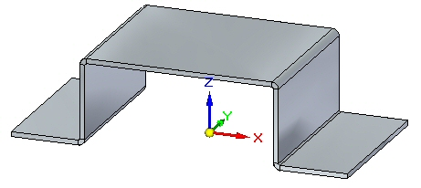
In this activity, behavior of the Design Intent relationships can be observed by watching the dynamic preview while pulling one of the handles. In many cases, just observing the behavior without actually making the change is what will be accomplished. Pressing the Esc key will exit the command without making any modifications. If a flange is moved erroneously, use the undo command to restore it's position.
Select the face shown and click the primary axis.
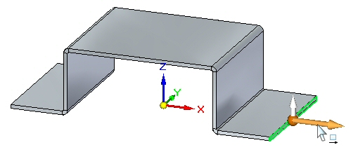
On the Design Intent dialog box, click Advanced.
Click the Restore button on the Advanced Design Intent panel.
This resets the Design Intent relationship items to the default values.
Drag the handle as shown and observe the behavior, then press the Esc key.
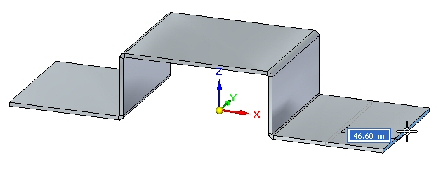
Observations:
-
The flange chosen is symmetrical to the opposite flange about the right YZ base reference plane. The symmetry relationship is controlling the behavior of the opposite flange.
Select the face shown and click the primary axis.
In the Advanced Design Intentpanel, turn off symmetry about the YZ base reference plane.
Drag the handle as shown and observe the behavior, then press the Esc key.
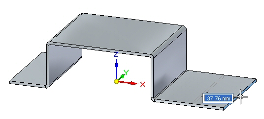
Observations:
-
With the Design Intent relationship controlling symmetry about the YZ plane turned off, moving the thickness face causes the flange to be modified independently.
A permanent relationship between two faces will be created.
Select the two faces shown and click the flange start handle.
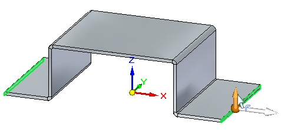
Click the Restore button on the Advanced Design Intent panel.
This resets the Design Intent relationships to the default values.
Drag the flange start handle a distance of 40.00 mm as shown.
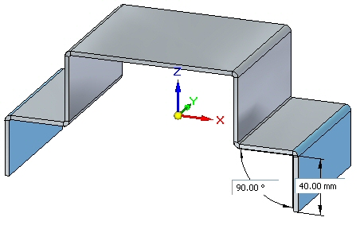
Select the face shown.
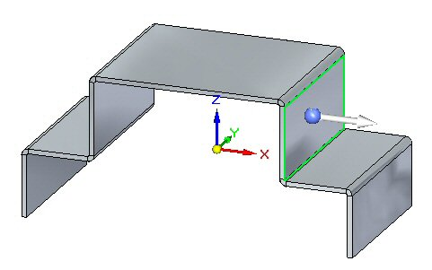
Position the steering wheel on the bend and click the torus to rotate the face as shown.
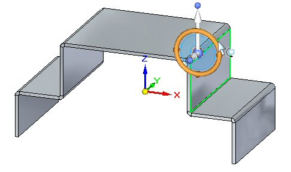
Rotate the face and observe the behavior, then press the Esc key.
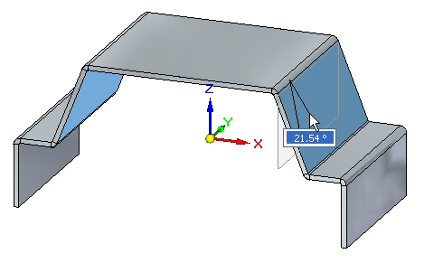
Observations:
-
Symmetry about the base reference planes is causing the opposite flange to remain symmetrical.
Select the face shown.
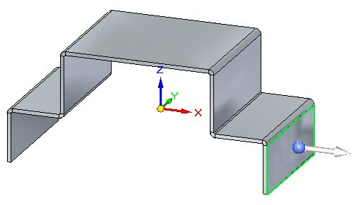
Click the Face Relate->Parallel command.
On the command bar select the Persist option. Select the face shown.
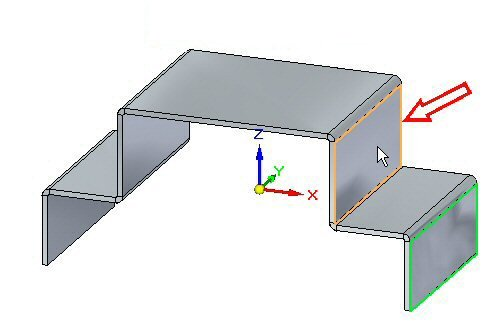
Click the green check to accept.
A persistent relationship making the two faces parallel has been established and is displayed in PathFinder.
Select the face shown.
Position the steering wheel on the bend and click the torus to rotate the face as shown.
Rotate the face and observe the behavior.
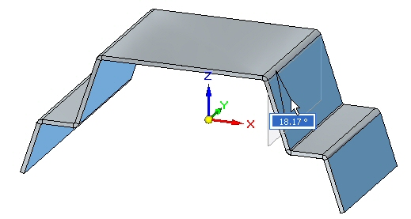
Rotate the face 20o.
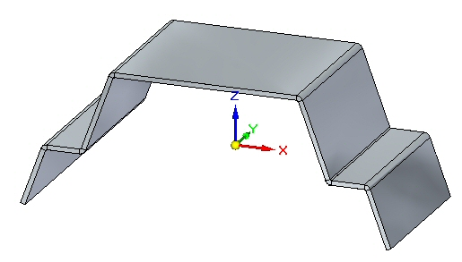
Observations:
-
Symmetry about the base reference planes is causing the opposite flanges to remain symmetrical. The vertical flanges remain parallel due to the persistent relationship established previously.
Thickness chain is a Design Intent relationship that is unique to sheet metal.
Select the thickness face shown and select the move handle.
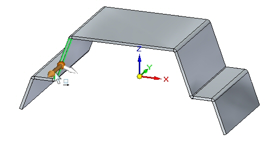
Click the Restore button on the Advanced Design Intent panel.
Drag the handle as shown and observe the behavior, then press the Esc key.
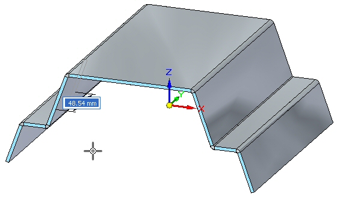
Observations:
-
The Design Intent relationships affecting the behavior are thickness chain, maintain coplanar faces and symmetry about the base reference planes.
Select the thickness face shown and select the move handle.
Turn off symmetry relationship.
Drag the handle as shown and observe the behavior, then press the Esc key.
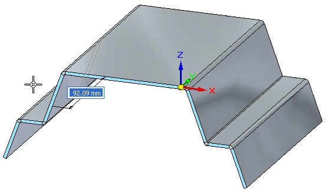
Observations:
-
The Design Intent relationships affecting the behavior are thickness chain, and maintain coplanar faces.
Select the thickness face shown and select the move handle.
Turn off the Maintain Coplanar Faces relationship.
Drag the handle as shown and observe the behavior, then press the Esc key.
Observations:
-
When a face is selected and it is part of a thickness chain, the maintain coplanar faces for that thickness chain is overridden. This will become apparent in the next step.
Select the thickness face shown and select the move handle.
Turn on Maintain Coplanar Faces, and turn off Thickness Chain relationship.
Drag the handle as shown and observe the behavior, then press the Esc key.
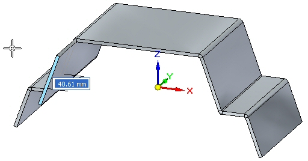
Observations:
-
Even though Maintain Coplanar Faces is turned on, because Thickness Chain is off, only the face selected is moved.
Create the cutout approximately as shown.
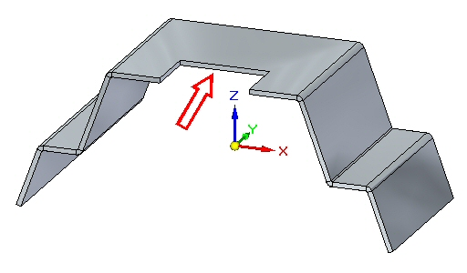
Select the thickness face shown and select the move handle.
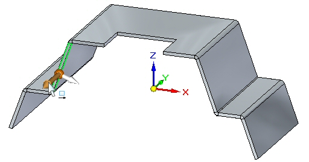
Turn on Maintain Coplanar Faces, and turn off Thickness Chain.
Drag the handle as shown and observe the behavior, then press the Esc key.
Observations:
-
Even though Maintain Coplanar Faces is turned on, because the thickness chain is off, only the face selected is moved. Maintain coplanar faces does not apply to faces residing in a thickness chain.
Note:Thickness chain can also consist of non planar thickness faces connected by bends as shown in the example below. The arrow points to a face, created by a jog, which is not coplanar to the other thickness faces.
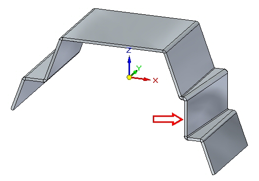
In this activity you explored the behavior of sheet metal geometry by creating relationships and changing Design Intent relationships.
-
Click the Close button in the upper- right corner of this activity window.